Memorium: 記憶の博物館
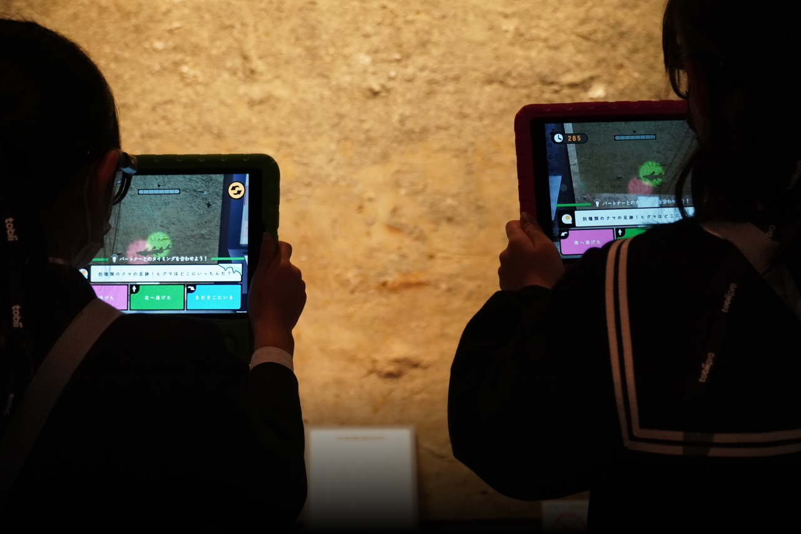
👀 描いた未来
これは修士研究の一環であり、「ISHIKABE」で得た知見を活かした、共同的な学習を促すための体験デザインを行いました。兵庫県立人と自然の博物館の協力のもと、リサーチ、体験デザイン、ソフトウェア開発、ワークショップまでを1人で担当しました。
概要
今回の課題として、端末がパーソナルデバイスであり、一人向けに設計されているという点があります。博物館の展示は家族や友人と共に楽しむものなので、この個別性を超えて、複数人が共同で楽しめる方法を模索する必要がありました。そこで見つけたのが、視線推定技術を活用した論文で、視線を複数人で共有することで、共同的な発見や発案を促すという研究がありました。
この技術を応用し、端末を通じて「どこを見ているのか」を可視化することで、複数人での共同観察につながると考えました。具体的には、「博物館の展示に潜む記憶を探そう」というコンセプトをデザインしました。端末からAR上でサーチライトが照射され、そのライトが「記憶」に当たると影が浮かび上がります。その影を複数人で照らすと、影に関連するクイズが画面にポップアップされ、3択のクイズに答えることで記憶を集めていくという体験を構築しました。
これにより、視覚的に分かりにくい展示物であっても、子どもたちの興味を引き、例えば「地層展示の右下にある突起物は何だろう？」といった疑問に対してライトを当てると、コンテンツが表示されます。そこに友達を呼んで、「一緒にクイズに答えてみようよ！」と誘うことで、展示物の内容について詳しく学べるような体験を提供する流れです。
この技術を応用し、端末を通じて「どこを見ているのか」を可視化することで、複数人での共同観察につながると考えました。具体的には、「博物館の展示に潜む記憶を探そう」というコンセプトをデザインしました。端末からAR上でサーチライトが照射され、そのライトが「記憶」に当たると影が浮かび上がります。その影を複数人で照らすと、影に関連するクイズが画面にポップアップされ、3択のクイズに答えることで記憶を集めていくという体験を構築しました。
これにより、視覚的に分かりにくい展示物であっても、子どもたちの興味を引き、例えば「地層展示の右下にある突起物は何だろう？」といった疑問に対してライトを当てると、コンテンツが表示されます。そこに友達を呼んで、「一緒にクイズに答えてみようよ！」と誘うことで、展示物の内容について詳しく学べるような体験を提供する流れです。
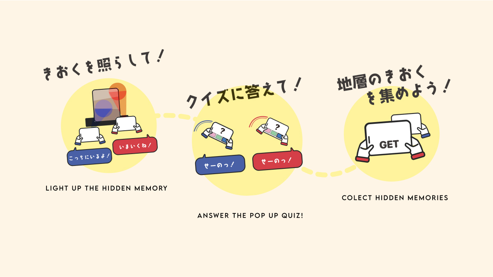
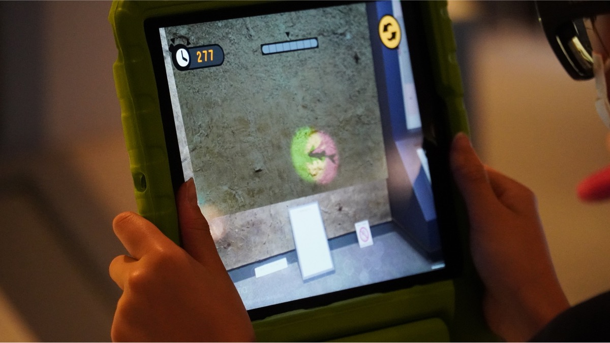
 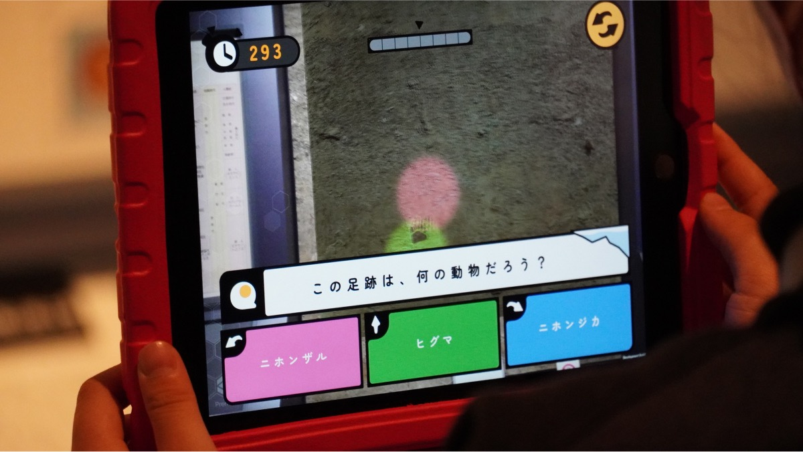
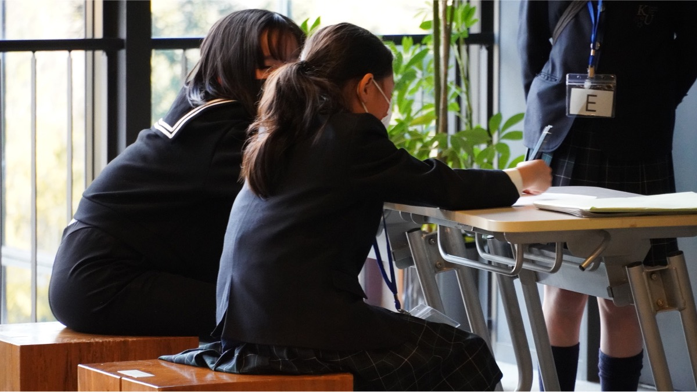
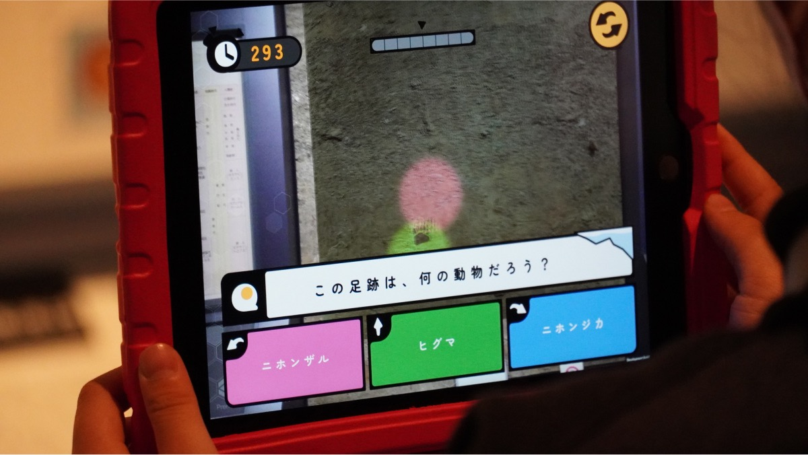
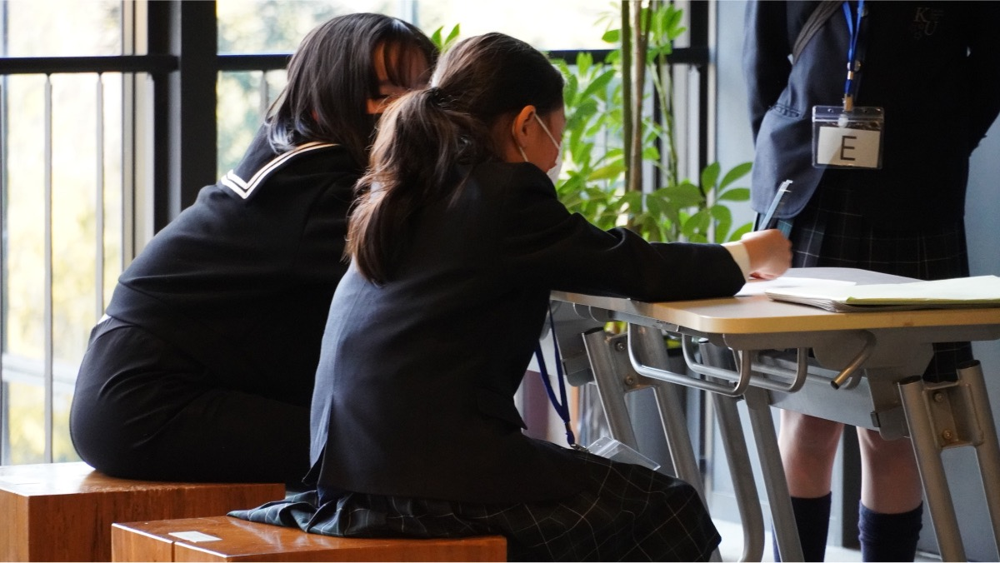
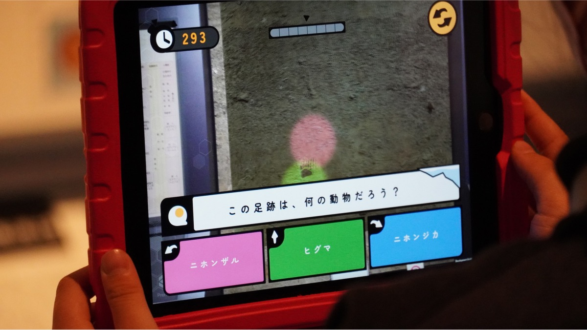
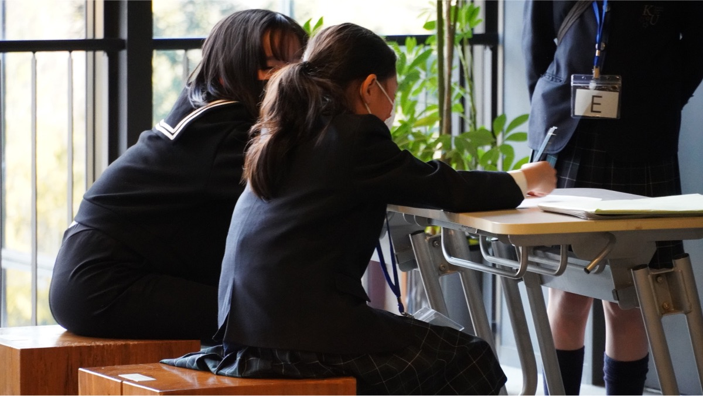
この展示、人気ないんです。
学芸員の方にどの展示物においてコンテンツを制作するかを歩きながら案内された際の一言でした。
兵庫県立人と自然博物館の「上昇する六甲シリーズ」展示は、氷河期から寒氷期への移り変わりを示す興味深い展示でありながら、来館者の関心を十分に引き付けていませんでした。高度な知識が不足する場合、展示物が「ただの土と石」に見えてしまう点、40万年という壮大な時間の流れを想像することが困難な点を踏まえると、子どもたちにとって、この展示は二重の意味で難解でした。
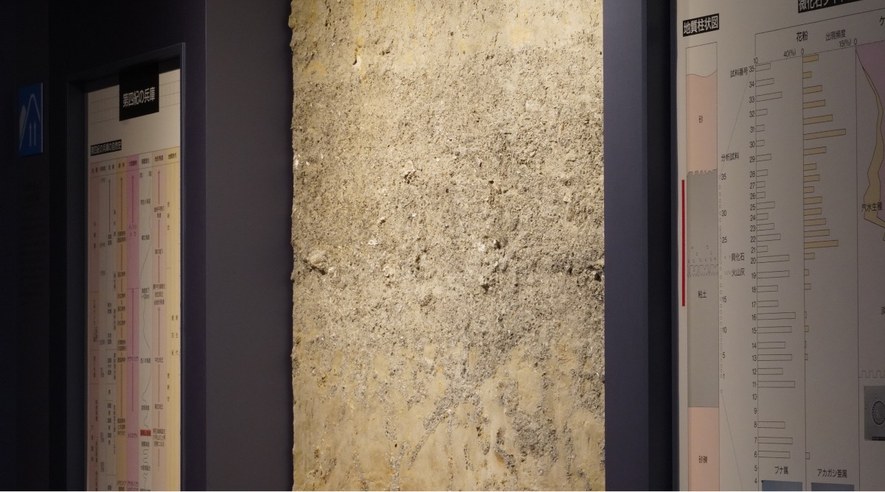
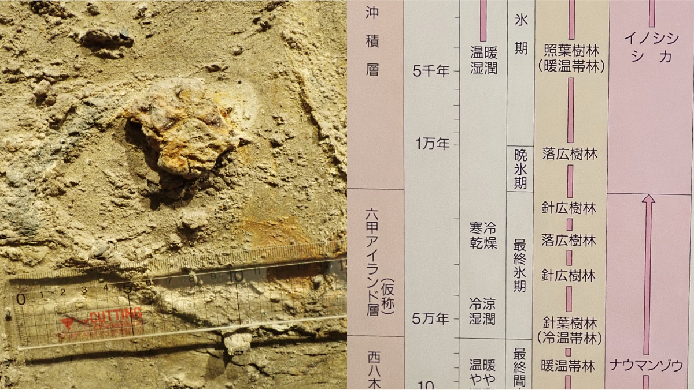
兵庫県立人と自然博物館の「上昇する六甲シリーズ」展示は、氷河期から寒氷期への移り変わりを示す興味深い展示でありながら、来館者の関心を十分に引き付けていませんでした。高度な知識が不足する場合、展示物が「ただの土と石」に見えてしまう点、40万年という壮大な時間の流れを想像することが困難な点を踏まえると、子どもたちにとって、この展示は二重の意味で難解でした。
興味が共有される体験
研究によると、博物館のような場所での非公式学習は、子どもの発達に極めて重要です[5]。hands-on活動や、子どもたちの興味と好奇心に基づいた自由な探索が、学習効果を高めることが分かっています[3]。
さらに、社会的相互作用が学習を促進することも明らかになっています。博物館での学びは社会的文脈の中で行われ、来館者同士が情報を共有し、意味を構築し合うのです[7]。
しかし、従来のAR体験は個人的なものが多く、来館者間の自然な社会的交流を抑制してしまう傾向がありました。これは、学習効果を最大化する上で大きな課題となっていました。
これらの課題を解決するため、私は「記憶を発見し、収集し、保存する博物館」というコンセプトを思いつきました。この博物館では、展示物が単なる物体ではなく、豊かな記憶を持つ存在として扱われます。
技術的には、このアイデアをARで実現し、さらに協調学習の要素を加えることにしました。具体的には以下のような特徴を持つシステムを開発しました：
このシステムは、ARを共同的に使える通信で複数端末間をつなぎ、AR-AR協調体験を実現しています。これにより、単なるデジタル情報の提供にとどまらず、来館者間の社会的相互作用を促進し、より深い学びを可能にします。
-
1.
特殊な端末（タブレット）を通して見ると、普段は見えない展示物の「記憶」が可視化される。
2. 端末から発せられる仮想的なサーチライトが、記憶に当たると、その記憶の「影」が現れる。
3. 複数の来館者が協力して記憶の影をキャプチャーする。
4. キャプチャーした記憶に関連するクイズが表示され、協力して回答する。
5. 回答時には全員が同時に端末を傾けるなど、物理的な共同行動を組み込む。
このシステムは、ARを共同的に使える通信で複数端末間をつなぎ、AR-AR協調体験を実現しています。これにより、単なるデジタル情報の提供にとどまらず、来館者間の社会的相互作用を促進し、より深い学びを可能にします。
ISHIKABEの学び
ISHIKABEの結果、探索体験そのものやタブレットの傾き操作は支持されたものの、よりシンプルなゲームプレイが求められることがわかった。そこで、暗闇を照らして隠されたオブジェクトを探すというメインコンセプトはそのままに、より直感的な探索体験を実現するために、ゲームのコアフレームワークに大幅な修正を加えた。ゲームプレイのコンセプトを図6に、設計したゲームプレイのフローチャートを図7に示す。
AR-AR UIの設計
興味の共有は共同学習をサポートする。来館者と展示物とのインタラクションだけでなく、来館者と展示物とのインタラクションを生み出すことも重要である。Grinterらは、来館者が他の来館者の音声ガイドを盗
聴できるようにすることで、来館者の協働を促進した
[9]。Sungらは、視線方向を共有することで協力が促進されることを実証した[15]。インタラクションを誘発するために、来館者が注目するポイントを可視化し、共有することが望ましい。そこで、本ゲームでは、無線接続を用いたAR-AR連携により、注目点を共有することを目的とする。そのために、暗闇を光で照らし、隠されたものを探す行為をイメージした図8のサーチライトユーザインタフェース（UI）を設計・実装した。
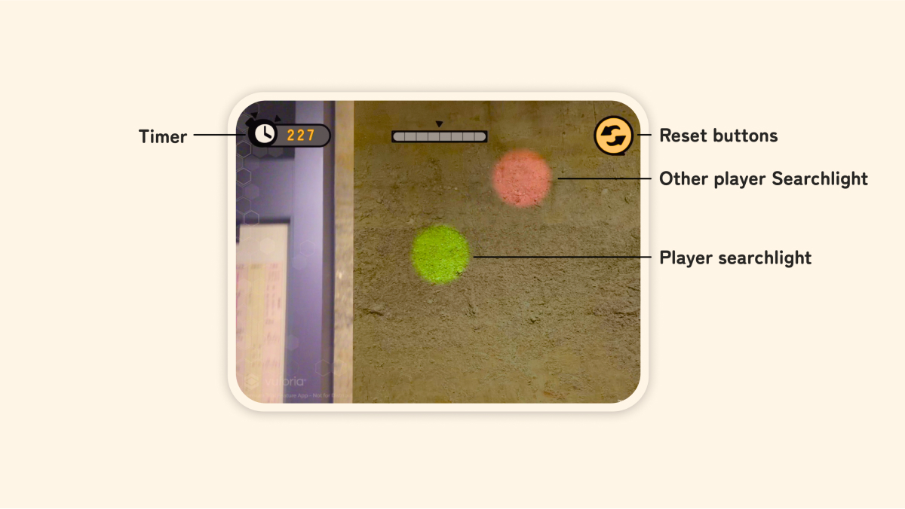
QUIZ UIの設計
このような直接的に知識を獲得する機会を提供するために、簡単な3択クイズを使用した。このクイズは、2人の参加者が同時に同じ方向にデバイスを傾けて回答することで、協調行動を促進する。左の問題に答えるには2人とも端末を左に傾け、真ん中の問題に答えるには2人とも端末を前に傾け、右の問題に答えるには2人とも端末を右に傾ける。図10に示すように、正解に対して獲得効果が解除された後、対象物の説明が表示される。
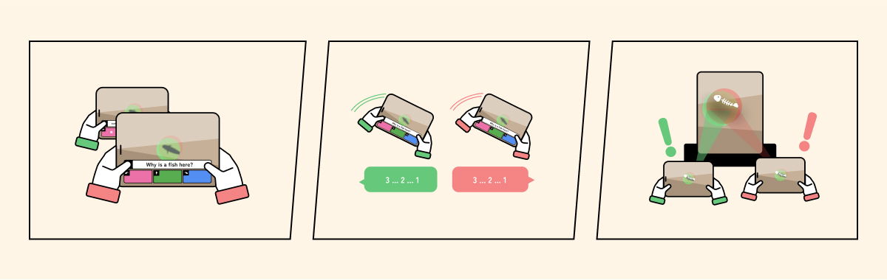
結論
境界線のない学びの実現へ
このプロジェクトを通じて、情報と現実の境界線を曖昧にすることで、新しい学びの可能性が開けることが明らかになりました。AR技術と協調学習の概念を組み合わせることで、従来は難解だった展示内容を、子どもたちにとって魅力的で理解しやすいものに転換することができました。
ふりかえり